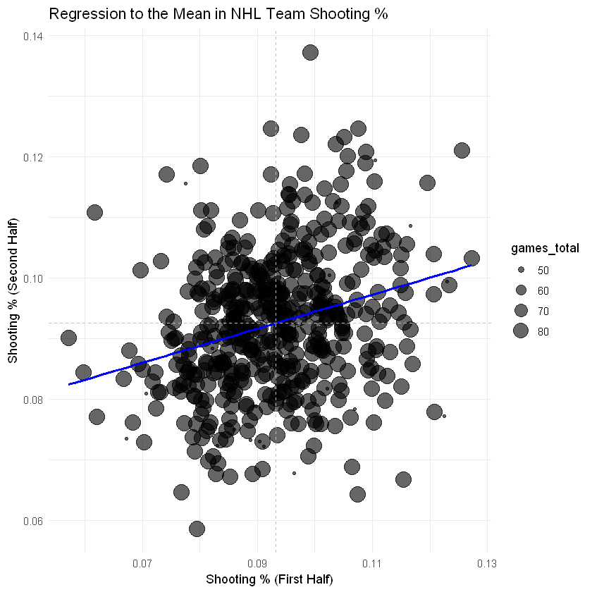
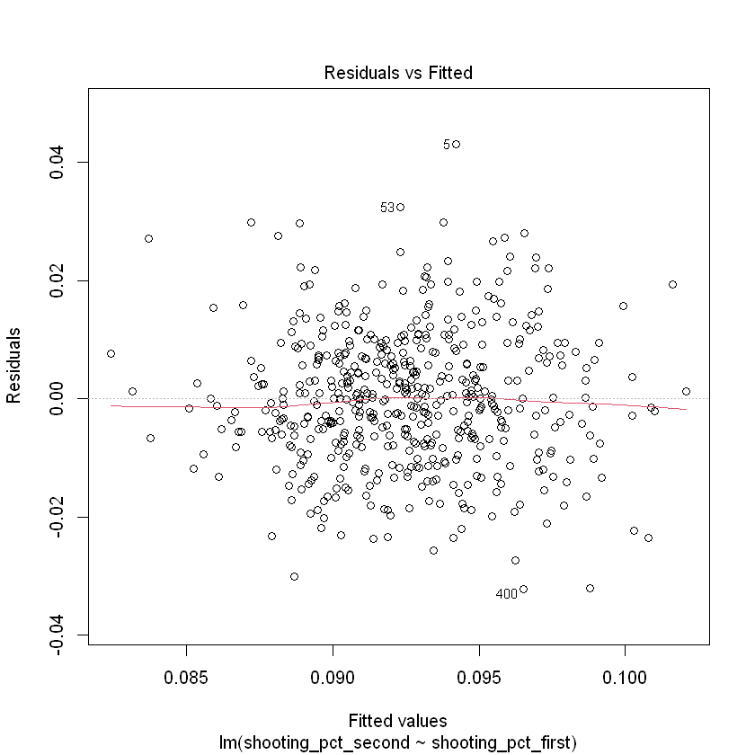
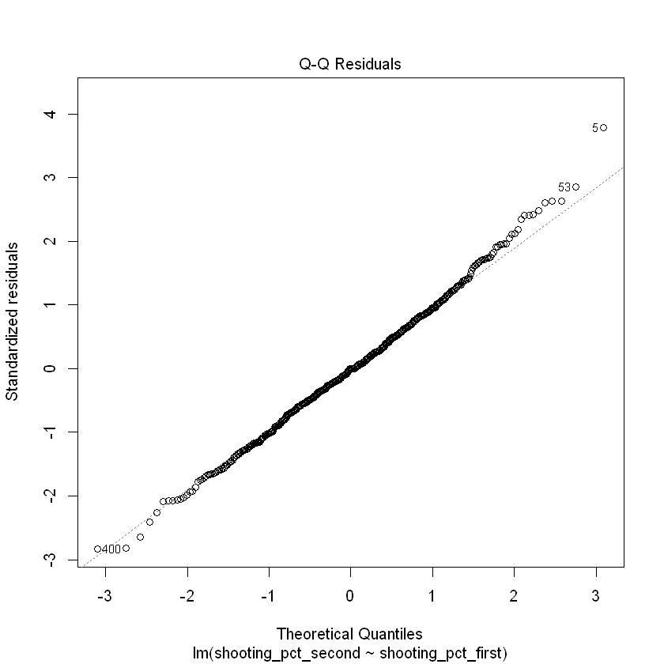
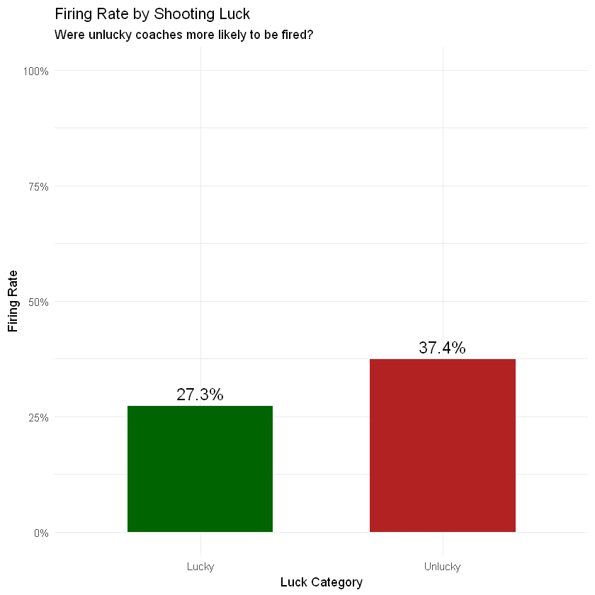
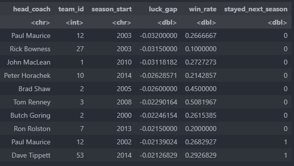
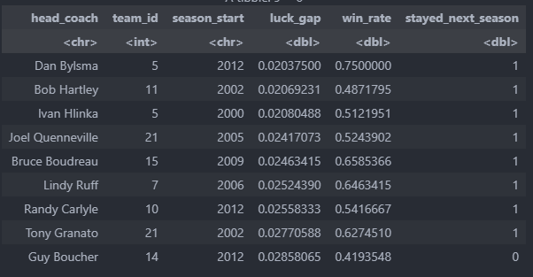

Shooting Percentage Luck? An analysis of NHL Coach Firings

Introduction
Last season, 25% of coaches in the NHL were fired either during or after the year. This reflects a trend in the NHL as front offices do not have patience to give a coach a long leash, leading to quick decisions. Teams go on cold runs, the blame is put on the coach, and they get fired—simple as that.
This forms the basis of why I decided to conduct the analysis detailed in this article: I wanted to know whether these constant firings were warranted or if bad luck was in play. In hockey analytics, few stats spark as much debate as shooting percentage. Some argue it’s mostly driven by luck—subject to random bounces, hot streaks, and goalie performance—while others believe it reflects real skill, especially when maintained over time. Regardless, shooting percentage (S%) plays a role in how teams are evaluated and, potentially, how head coaches are judged.
This project set out to answer three key questions using NHL data and R-based statistical analysis:
- Is shooting percentage stable across a season, or does it mostly reflect randomness?
- Does a high shooting percentage relate to a higher win rate?
- Are coaches more likely to be fired with below-average shooting percentages?
By breaking down team-level performance and linking it to coaching outcomes, we can better understand how performance metrics—whether fair or flawed—shape careers in the NHL.
Background
Shooting percentage is calculated as goals scored divided by shots taken. On the surface, it seems simple. But it has outsized consequences: teams with low S% often lose more games, and in some cases, coaches with low-S% seasons don’t return the following year.
While possession-based metrics like Corsi and Fenwick have grown in popularity, shooting percentage still shows up in headlines, recaps, and executive decisions. But is it reliable? Is it fair?
This project explores whether shooting percentage is more noise than signal—and whether it unfairly affects job security.
Methodology
- Shooting Percentage Stability: Each season’s games were split into two halves. Shooting percentages from the first and second halves were compared using correlation analysis. A strong correlation would suggest underlying skill; a weak one implies randomness. Visuals were created to showcase any trends.
- Shooting Percentage and Win Percentage: A linear regression was run using season-average S% as the predictor and win percentage as the outcome. A correlation test was also conducted to explore their relationship.
- Coach Firings vs. Shooting Percentage: Season-level S% was calculated and joined with head coach records. Coaches were grouped by S% ("unlucky" for below average), and firing rates were compared between groups.
Results
1. Shooting Percentage Is Not Consistent
The correlation between first-half and second-half team shooting percentage was weak. Teams that shot well early often regressed, while some low-S% teams rebounded. This suggests that S% is not a stable, repeatable stat across a season—supporting the idea that it's heavily influenced by luck.
- Regression of 1st half vs. 2nd half S%: 0.076 (very low impact)
- Regression plot: Shows sporadic results; likely regression to the mean 
- Residuals vs. Fitted: Flat line indicates linear relationship 
- Q-Q plot: Even distribution confirms model fit 
2. Shooting Percentage Does Help Win Games
Despite the randomness, teams with higher shooting percentages typically won more games. A clear positive relationship emerged from the regression results, though R-squared suggests other factors matter too.
In short: Shooting better leads to winning, even if it’s hard to control.
- Correlation between coach S% and win%: 0.49
- Regression R²: 0.24 (24% of win% variance explained by S%)
- Relationship plot: Upward trend between S% and win%
3. Unlucky Coaches Are Fired More Often
This was one of the most striking results. Coaches with lower-than-average S% had significantly higher firing rates—even when win percentage was controlled.
- Firing rate among "unlucky" coaches: 37.4%
- Firing rate among "lucky" coaches: 27.3% 
- Bottom 10 coaching seasons by S% luck: 80% fired 
- Top 9 coaching seasons by S% luck: 11.1% fired 
These results suggest that even random variance in S% can impact a coach’s career, raising concerns about fairness and evaluation standards.
Visualization & Code Access
The R code used in this project includes:
- Season-splitting for temporal correlation
- Team-level regression analysis
- Coach-season joins with firing status
- Group summaries and tidy visualizations
You can explore the full notebooks and data here:
Conclusion
This project confirms that shooting percentage is not a skill-driven stat at the team level, but it still matters both on the scoreboard and in the coach's office. Teams with high shooting percentages tend to win more. Yet, since S% fluctuates heavily and lacks stability, its role in coaching evaluations may be disproportionate.
Organizations should take note: firing a coach over poor winning numbers over a stretch of games may be blaming the wrong factor as cold team shooting is a heavy factor. This analysis aims to show the randomness of shooting percentage and the impact on winning that occurs. In a league where goals can hinge on inches and bounces, decision-makers must look deeper than surface stats to build long-term success.